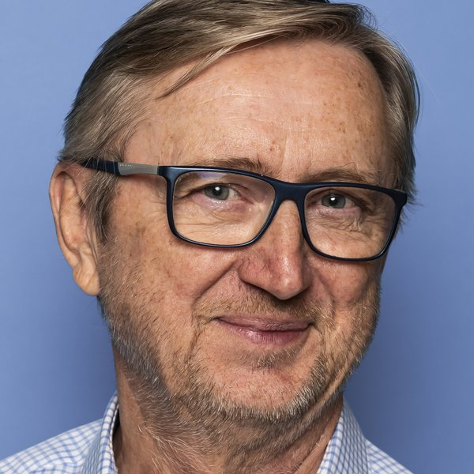

Onafhankelijk AI-advies voor de reissector
Wat kan AI concreet betekenen voor jouw reisbureau, en wat niet?
Leveranciers beloven vandaag veel met AI. Ik help zaakvoerders van reisbureaus en touroperators uitzoeken wat daarvan echt iets oplevert voor hun zaak, voor ze tijd en geld investeren. Ik verkoop zelf geen software en neem geen commissies. Ik sta aan jouw kant van de tafel.
Plan een kennismaking Doe de gratis AI-zelftestHerken je een van deze vragen?
Dit zijn vragen die ik vandaag bij zaakvoerders in de sector hoor.
Mijn softwareleverancier zegt dat er nu AI in zit. Wat heb ik daar concreet aan?
Ik zoek uit wat die functies echt doen, wat ze kosten en of ze passen bij de manier waarop jullie werken.
Moet ik zo'n AI-chatbot op mijn website zetten, of is dat weggegooid geld?
Er bestaan sterke tools voor de reissector. Of ze voor jouw grootte en klanten zinvol zijn, is een andere vraag.
Mijn medewerkers gebruiken ChatGPT al voor mails en offertes. Is dat wel veilig met klantgegevens?
Samen maken we duidelijke afspraken: wat mag, met welke tools, en hoe je de privacy van je klanten beschermt.
Mijn back-office zit vol gegevens en rapporten die niemand leest. Kan dat niet slimmer?
Vaak zit de meerwaarde niet in nieuwe software, maar in het beter gebruiken van wat je al hebt.
Hoe ik werk
Kort, concreet en zonder langlopende verplichtingen.
Kennismakingsgesprek vrijblijvend
We bespreken jullie werking, de tools die jullie gebruiken en waar het vandaag wringt. Je weet daarna of het zinvol is om verder te gaan.
AI-scan van je zaak
Ik bekijk jullie processen, software en leverancierscontracten. Je krijgt een helder schriftelijk advies: waar AI echt iets oplevert, waar niet, wat prioriteit heeft en wat het ongeveer kost.
Begeleiding bij de keuze
Wil je ermee verder, dan help ik offertes vergelijken en zit ik mee aan tafel met leveranciers. De uitvoering gebeurt door je leverancier of IT-partner. Ik blijf aan jouw kant.
Gratis AI-zelftest voor reisbureaus
Benieuwd waar de kansen liggen voor jouw zaak? Beantwoord 11 korte vragen. Je antwoorden worden getoetst aan 24 concrete toepassingen uit de reissector, van klantmails en reisvoorstellen tot facturencontrole en dashboards. Je krijgt meteen te zien wat kansrijk is, en wat je beter (nog) niet doet.
Zonder e-mailadres, zonder verplichting. Je antwoorden verlaten je browser niet.
Wat ik niet doe
Omdat onafhankelijkheid het hele punt is, ben ik daar graag duidelijk over:
- Ik verkoop geen software en geen licenties.
- Ik ontvang geen commissies of doorverwijsvergoedingen van leveranciers.
- Ik bouw en onderhoud geen systemen en sluit geen langlopende servicecontracten af.
- Ik beloof geen "AI die alles oplost". Soms is het beste advies: nu nog niet.
Je bestaande IT-partner of softwareleverancier blijft dus gewoon je IT-partner. Ik zorg ervoor dat je met meer kennis van zaken met hen kan praten.
Wie ik ben

Ik ben Dirk De Waegeneire. Mijn loopbaan speelde zich af tussen IT en business. Ik heb IT-oplossingen verkocht, van computers tot cloud, managed services en datacenters. Ik hielp CRM-systemen opzetten en werkte mee aan de transformatie van een grote IT-organisatie. Zo leerde ik hoe groot de afstand kan zijn tussen wat een leverancier belooft en wat een organisatie er echt mee doet.
De reissector ken ik van binnenuit. Met mijn eigen reisorganisatie Adagio stond ik zelf aan de kant van de zaakvoerder, en als bestuurslid van de VVR, de beroepsvereniging van de Vlaamse reisbureaus, leerde ik de uitdagingen van de hele sector kennen.
De voorbije jaren verdiepte ik me in AI: de verschillende systemen, AI-agents en automatisering. Ik bouw zelf werkende automatiseringen, zodat ik weet waarover ik praat. Ik ben geen programmeur en geen datawetenschapper. Mijn sterkte is vertalen: tussen technologie en de dagelijkse realiteit van een KMO.
Daarnaast ben ik mentor bij NOA (Netwerk Ondernemen), waar ik belangeloos ondernemers begeleid. Ook daar draait het om hetzelfde: helpen de juiste keuzes te maken, niet iets verkopen.
- IT-verkoop en -projecten in internationale en corporate functies
- Eigen reisorganisatie Adagio
- Voormalig bestuurslid VVR
- Mentor voor ondernemers bij NOA
- Praktijkervaring met AI-tools en automatisering (n8n)
Zin in een gesprek?
Bel of mail me gerust. Een eerste gesprek is vrijblijvend. Je beslist daarna zelf of je verder wilt.
Stuur me een mail